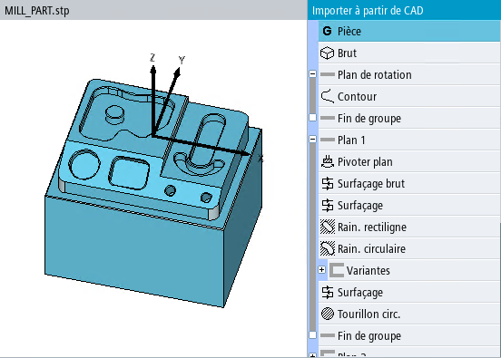

The 3D model of the workpiece and the suggested machining steps are displayed in the "Import from CAD" screen form.
The content of the list of machine steps depends on the selected technology, the workpiece and workpiece zero. The selected machining step is highlighted in the 3D model.
Machining steps, which can be used to create the same model, are listed under "Alternatives".
On machines that can swivel, the molds are additionally distributed across planes. A "Swivel plane" step is inserted for each plane. On swiveling machines, the models are also available on inclined planes.
The following list contains all the important machining steps:
"Workpiece" machining step
Every machining step list starts with a "Workpiece" step. The zero point can be defined in this step.
"Blank" machining step
In the "Blank" machining step, you can take the dimensions of the blank directly as blank step in a G code program.
For a ShopMill program, the blank is written to the program header.
Before applying, you can adapt the values, e.g. in order to implement a blank allowance.
| Note |
In selection list "Blank" you can switch between the available blanks and select the appropriate blank. Values are provided that are appropriate for all blanks. |
"Rotation plane" block
You can display the contour of the 3D model in block "Rotation plane" and using the right-hand mouse key, you can rotate through various positions and planes. All turning operations are executed here. This includes the contour and possibly grooves/recesses.
"Plane" block
All milling operations are executed under "Plane".